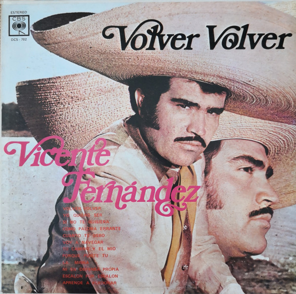
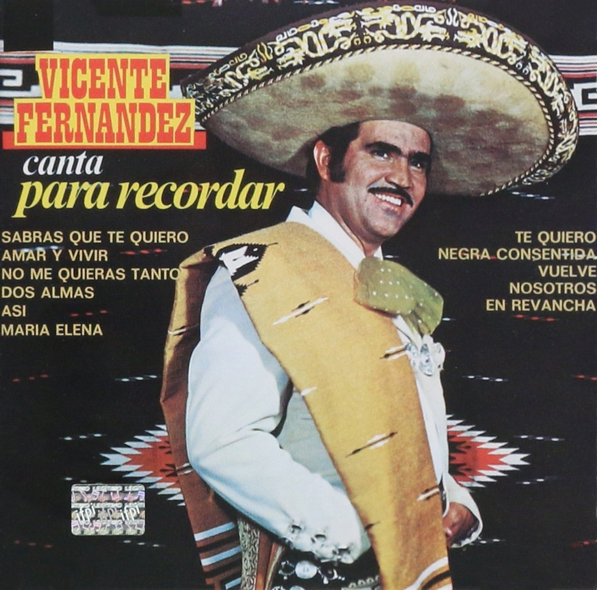

GRANDES ÉXITOS

Volver Volver (1976)
Contiene el himno ranchero que definió su carrera
El Rey (1987)
Incluye su icónica interpretación del clásico

Para Recordar (2000)
Grandes éxitos en versión acústica